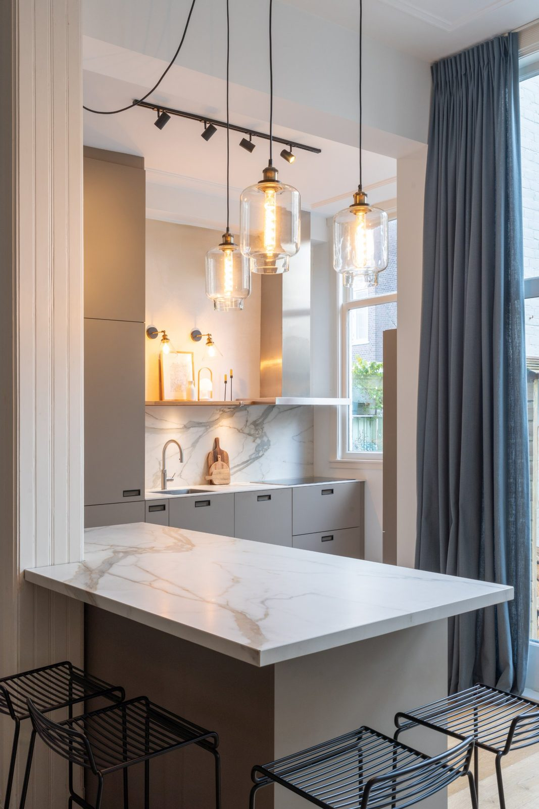
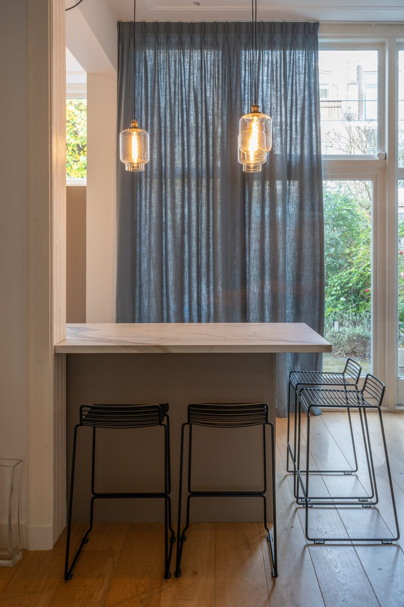
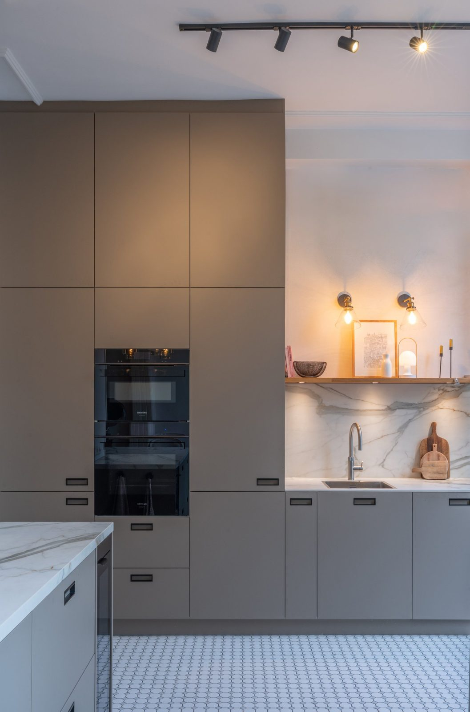
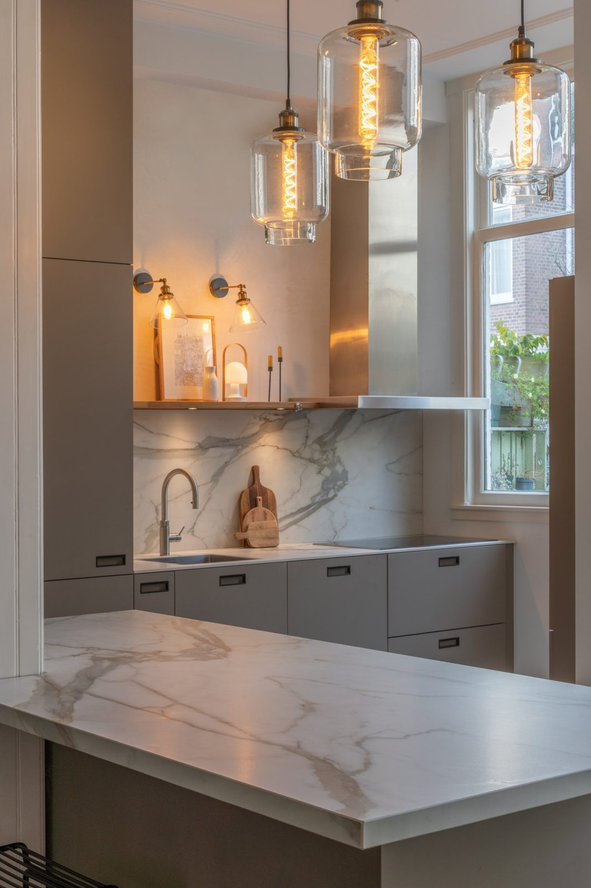
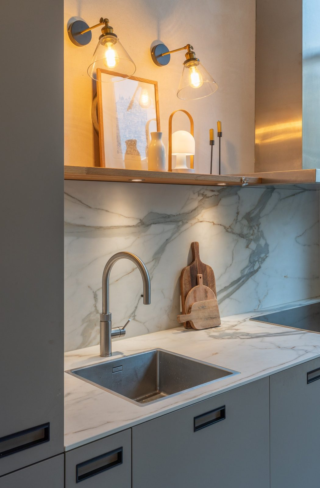
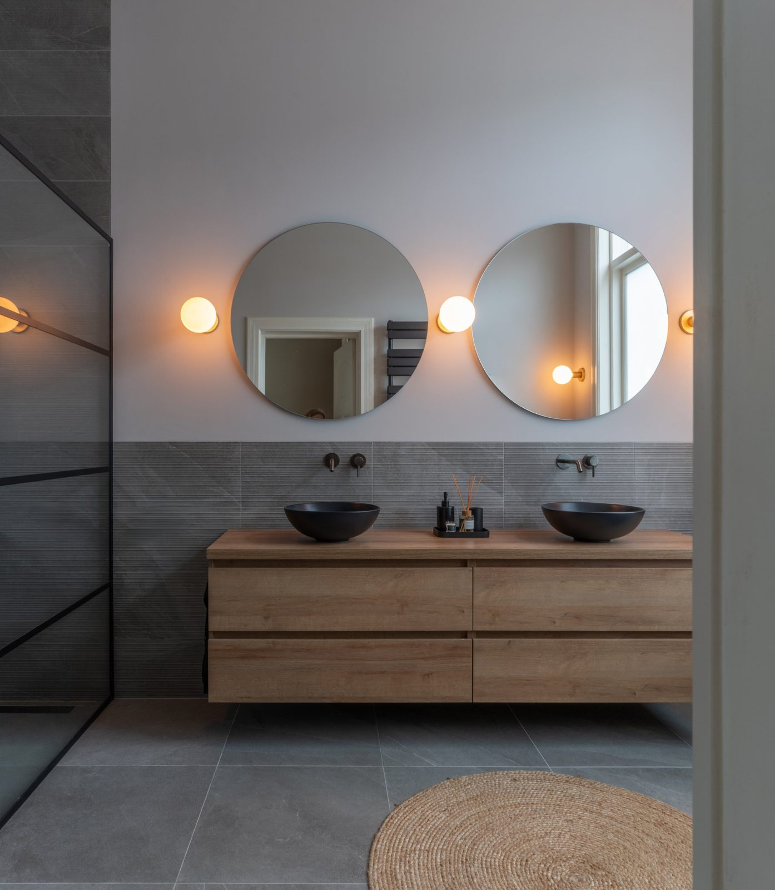
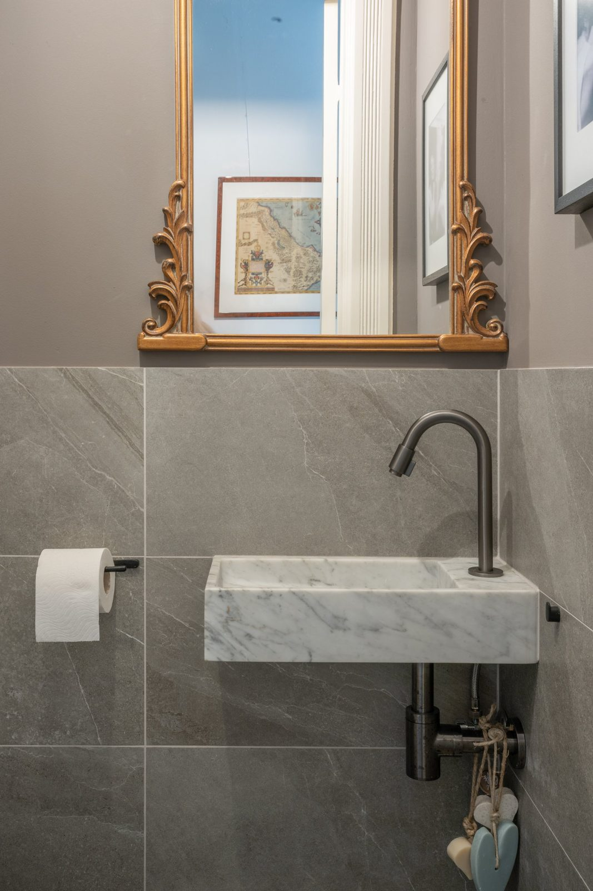
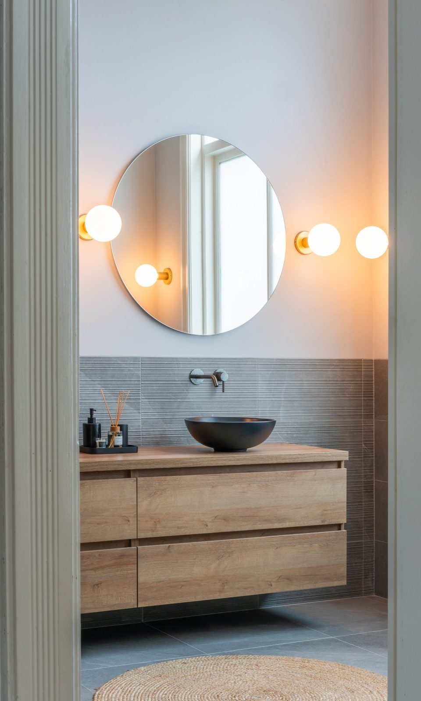
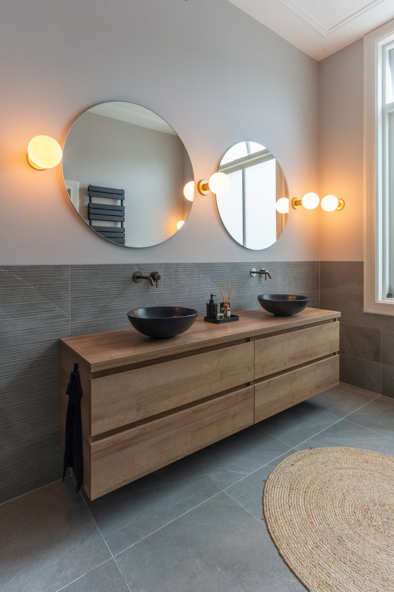

A villa by the dunes in Wassenaar
Houses & Villas · Wassenaar


The brief
A family returning to the Netherlands after years abroad asked for a villa that would feel open and light all year, with clear sightlines to the garden and enough quiet corners for a household of five.
The approach
The plan was reorganised around the south-facing side of the house: living, dining and kitchen now read as one space held together by a continuous floor, with the heavier functions moved to the north. Large openings were reworked so the dune light reaches the centre of the house.
Everything else was kept deliberately calm — pale walls, low horizontal joinery and a restrained palette — so the garden and the changing light remain the loudest thing in the room.



Dune light, pale oak and low lines: the house is organised around its south façade.
Materials and details
Pale oak, lime plaster and wool set the base, with bronze and unpolished stone used where hands and weather reach them. Finishes were chosen for how they age in a coastal climate rather than for how they photograph on day one.




Project information
- Services
- Interior architecture · Spatial planning · Joinery · Furniture & styling · Project management
- Location
- Wassenaar, Netherlands
- Property type
- Detached villa
- Photography
- Por definir